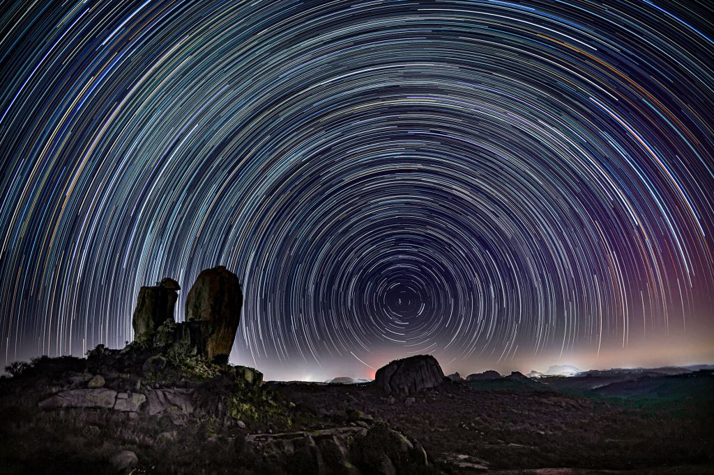

Polaris is a website in the style of a portfolio where we may post priceless memories of our classmates from this academic year as well as our own content, such photos and videos. We will also include information about ourselves so that people may learn more about us as if it were the past, and we may use our website as a repository for memories in the future. We would be able to keep our photos and films of ourselves for use on a website that functions as a portfolio. Our goal is to preserve these photographs from this time period and prevent throwing away priceless memories of ourselves so that we can look back on them in the future.
EXPLORE NOW